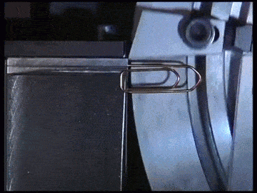

Our weeknotes keep drifting into multi-week notes. At least this time we have an excuse!
Week 191 share’s it’s name with with a large main belt asteroid 191 Kolga. 191 is also a prime number, which makes it an extra special weeknote. This week was mostly project meetings and blowing through work before being away in week 192. We did meet with our South American contact for the dashboard project while he was here in Iceland. It was an excellent meeting where we went through a lot of the issues and problems they are facing.
Week 192 shares its name with a stoney, main belt asteroid, Nausikaa 192. The asteroid is approximately 90km in diameter, making it rather large. Another astrological body sharing its name with week #192 is MOA-2007-BLG-192L a small brown dwarf star. It is only about 6% the size of our sun and recently has been found to have an Earth-sized extrasolar planet orbiting it.
We spent most of week #192 in Oslo, Norway for the WebDagene conference. It was an amazing event. Within hours of us walking off stage, the video was online. There was lunch and dinner included for the attendees to keep the conversations flowing. After dinner there were bands and DJs playing till late in the evening. Overall, it was more of a festival than conference.
The number 193 is not only a prime number, but a twin prime with 191. Week 193 shares it’s name with CIIC 193, an Ogham stone with Old Irish carved into it. These stones date back to as early as the 4th Century. In our week #193, we were getting back on track after a lovely trip to Norway. Mostly follow-up emails, planning, a few meetings and prepping for the new year.
After some time away, we have started back-up on project Virkisfell. The first things needed doing was to dust off the old code and upgrade the software to the newest versions. This meant updating to Django 1.7, and therefore dropping the old South migration tool infavor of the built-in Django version. We also took some time to comb through all the templates and convert all the strings into translation strings. This is good practice and will make things easier, faster and more flexible in the future.
Bric-à-brac

Back in September, the Rosetta mission came within 120 km of the asteroid. Now it is down to only 16 km and closing in on the landing site. In November, Philae the lander, will defend to the comet’s surface. It will be the first time we’ve successfully landed on a comet.
Finally, if you ever wondered how a paperclip was made, wonder no longer. It is amazing what you can do when you take something linear and express it in a rotary fashion.
